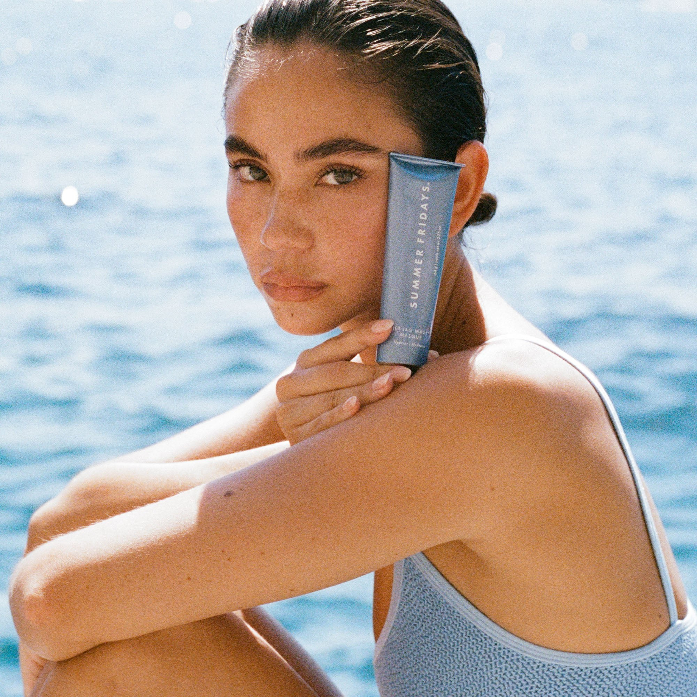
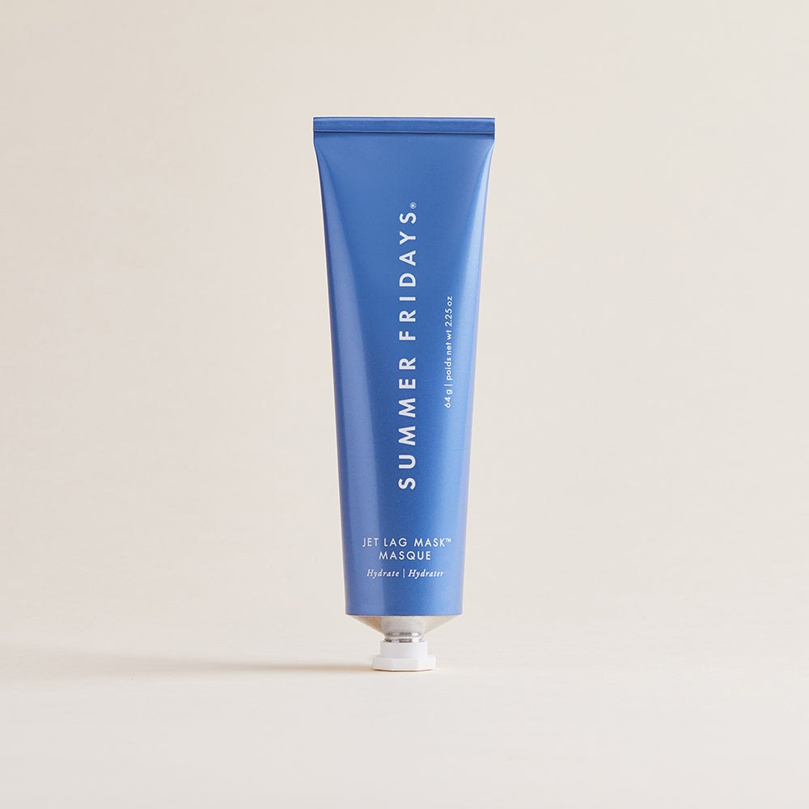
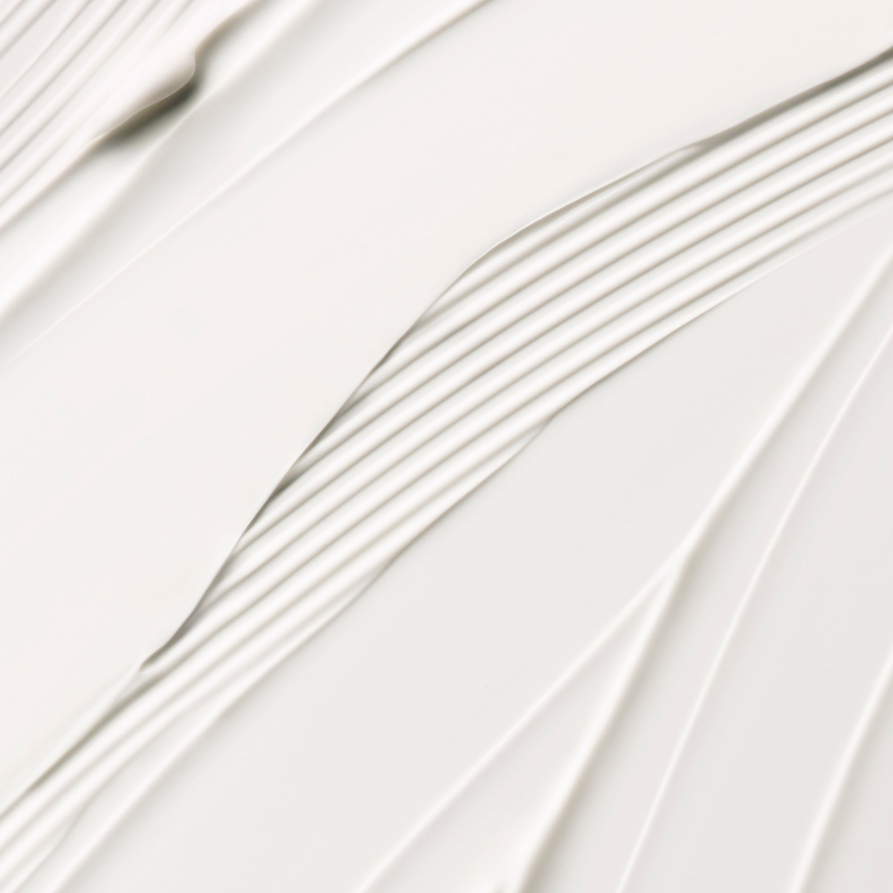
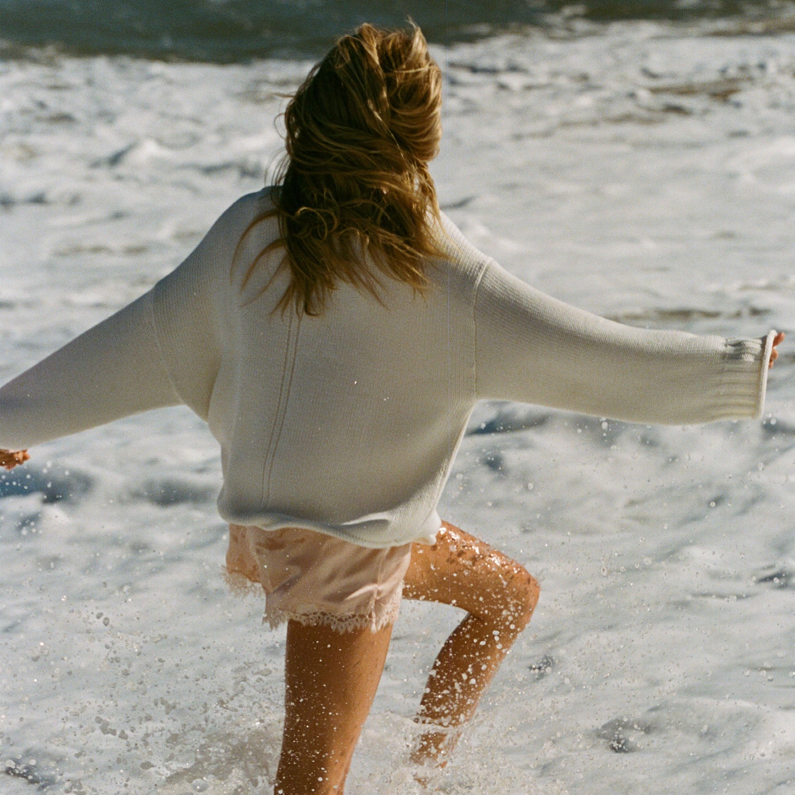
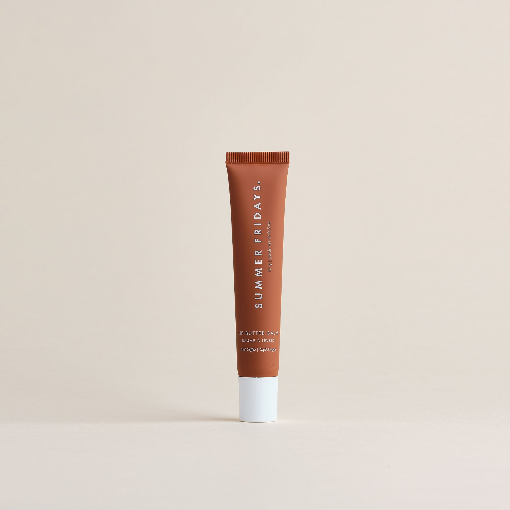
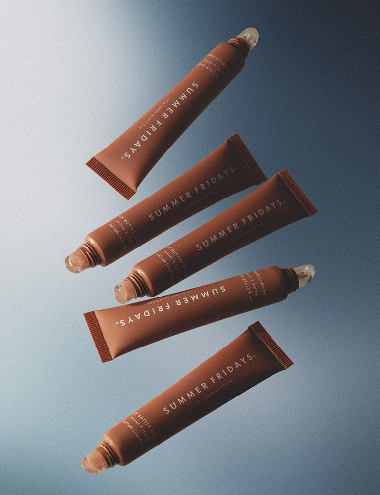

Hi, Summer Fridays.
From Fain & Laura at Travel Spree

In December we fly to Lisbon, then out to sea.
A Silversea sailing, with the episodes going live every Saturday from January 30 to February 27, 2027.
It all started with a jet-set schedule.
Your first product was Jet Lag Mask. We'd love to take it on a real jet‑lag trip.
Real jet lag. Real routine.
Laura shows what she actually does: Jet Lag Mask on the overnight flight and as an overnight mask at sea, Lip Butter Balm on deck in the sun and wind, then an honest look at how her skin held up.

Three steps. One long trip.
Two episodes. One honest verdict.

Getting there
The overnight flight and the first nights at sea, routine and all.

How it held up
After two weeks of sea air: what worked, and what Laura would change.
Part of the trip.

Lisbon to the Open Sea on Silversea: Worth It?


One trip. Two episodes.
To make the trip, we'd need a yes by about November 20.
Three things.
Want to come along?
If the idea fits, we'd love to talk. If it isn't quite right, we're happy to shape it around what works for you.